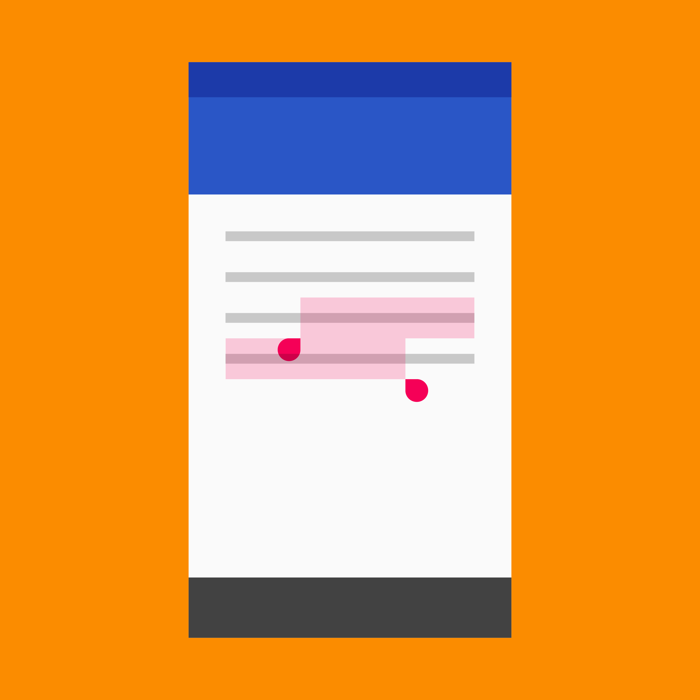

Selection enables user choices through gestures and visual cues.
Checkboxes indicate completion, such as checking items off a list.
Text selection is indicated by highlighting a segment of text.
Types of selection
Item selection
Text selection
Selection gestures
- A long-press, touch, or mousedown that’s held in the same position for a moment
- A two-finger touch (touch devices only)
